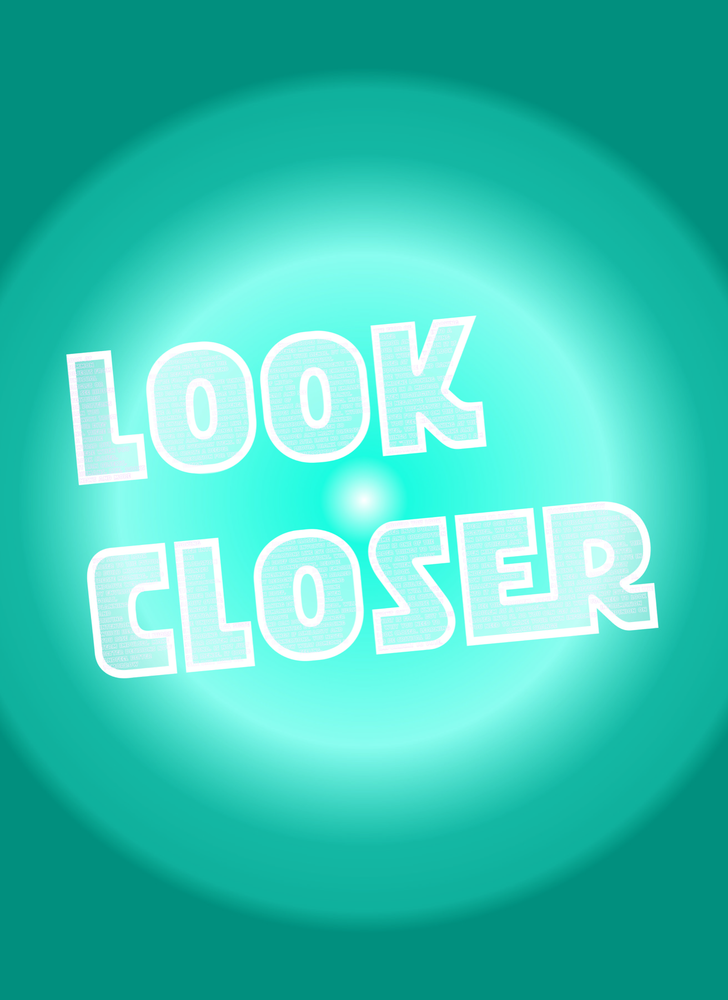

Koncept
En enkel sætning bliver en opfordring til at være nysgerrig og lægge mærke til det, vi ellers overser.
Kreativt projekt / Plakatdesign
Et personligt plakatprojekt og en kommentar til verden: Hvad ville vi opdage, hvis vi stoppede op og så lidt nærmere?

Idé
Jeg lavede Look Closer i min fritid. Plakaten handler om, hvor let vi går forbi vigtige detaljer uden egentlig at lægge mærke til dem.
Idéen ligger gemt i typografien. Bogstaverne indeholder små detaljer, som man må tættere på for at opdage. På den måde gør ordene selv det, de opfordrer til.
Fokus
En enkel sætning bliver en opfordring til at være nysgerrig og lægge mærke til det, vi ellers overser.
Bogstaverne er en del af budskabet. Det er først, når man undersøger dem, at de små detaljer kommer frem.
Størrelse, farve og kontrast skal både fange blikket på afstand og give en grund til at gå tættere på.
Billeder

Videre
Look Closer er en del af mine kreative projekter sammen med malerier, andre plakater og visuelle eksperimenter.
Se de kreative projekter